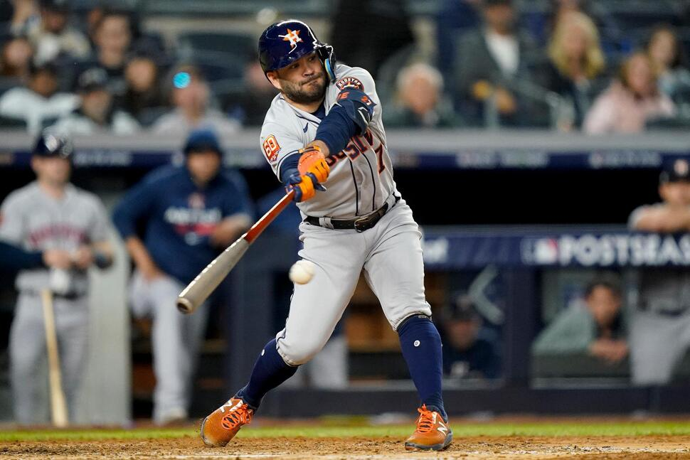

A season shortened by COVID and without fans should not be used to evaluate player performance.

Baltimore Orioles players salute as the national anthem plays to an empty crowd. Fans were not allowed to attend games in the 2020 season due to COVID restraints. · Photo by G Fiume/Getty Images
In March 2020, the coronavirus pandemic flipped the sports world on its head and gave Major League Baseball a large problem as they were set to begin their 162-game season in April with spring training already taking place.
Commissioner Rob Manfred decided to suspend the season until late July, but with a new set of rules. To complete a full season in time, Manfred moved to only 60 games, with fans not permitted. Other rules included neutral postseason venues and 7-inning doubleheaders to fit the schedule in.
“Well, I looked at it this way. It was better than nothing,” said Marc Tand, a YES Network statistician, about a season even being played in 2020. “The way I look at it. It's a completely different venue when you don't have fans,” said Tand.
When the parameters of the season are abnormal, one can expect the results to be the same. The 2020 Major League Baseball season was a baseball anomaly since less games led to an offensive-driven league, more streaky statistics, and no overall significance.
To evaluate the abnormality of the season, there must be a control variable and statistic parameters. In this case, statistics were used from 2019, a traditional 162-game season, and the 60-game 2020 season. The player qualifications were to have had a minimum of 150 plate appearances, with pitchers being removed from both datasets.
Viz.1
To summarize this 2020 season’s league-wide hitting: it was booming. Notable offensive increases included: on base percentage (OBP); rising by .014, and slugging percentage (SLG); increasing by .016. For reference, OBP is on a 0.0 – 1.0 scale with .300 being considered above average; or, as Marc Tand says, “if you fail seven out of ten times, you're a hero.”
Tand has worked over 30 years as a statistician for both New York MLB franchises. His reason for the 2020 offensive explosion? Pitching. Tand believes pitchers’ minimal amount of spring training resulted in less arm strength and less development. Another factor was that batters were facing the same pitchers more often due to less games and more divisional play, leading to better at-bats and overall hitting according to Tand.
Jose Abreu made the most of the COVID year, bringing home his first career MVP trophy. Abreu hammered the ball all year, flaunting a .317 BA and .987 OPS. · Photo by G Jonathan Daniel/Getty Images
Several players portrayed this power surge. Former Chicago White Sox first basemen, Jose Abreu, had been an above average hitter his whole career but exploded in 2020. Abreu won Most Valuable Player with 19 home runs and a league leading 60 runs batted in When adjusted for a regular season, these stats would result in about 50 HR’s and an astonishing 158 RBI’s: a feat that hasn’t been reached in 21 years.
While league averages in offense rose, hitting consistency lacked. This resulted in outlier seasons and wider ranges. Tand watched one successive outlier firsthand in former New York Yankee, Luke Voit. A designated hitter, he led the league in home runs in 2020, with 22 over 56 games played, a career high. Voit’s total surpassed his 2019 at 21, surprising many as he blossomed into a starting role; one he wouldn’t keep.
The Yankees traded away Voit the next year, an unexpected move at the time with the 29-year-old seemingly hitting his prime years as a power hitter. Tand contributes this decision to the oddity of the 2020 season and Voit’s outlier statistics. “If you have a prospect that you know, wins a home run title in a 60-game season, you’d think you would want to hang on to him for the next year, but apparently they saw a loophole in him,” said Tand.
Viz.2
Outlier seasons like this can be examined further by looking at league hitting ranges amongst qualified. A wider batting average range contributes to the theory of “hot streaks” and “slumps.” With a minimal schedule, some players can’t get their offense going, while others can go on batting tears without slowing down.
Two examples of these seasonal “slumps” were infielders Jose Altuve and Javier Baez. Both players recorded admirable 2019 campaigns but struggled mightily the following year. Altuve’s projected 101 strikeouts in a regular season would’ve been the most of his career. Baez’s projected 19 HR’s and 57 RBI’s stand out after averaging 25 and 82 in those respectful categories the past four years.
Viz.3
Teams acknowledged the irregularity of these players’ seasons despite their struggles. Baez signed a 140-million-dollar contract nearly two years later while Altuve remained a starter, winning a World Series in 2022 with the same team. The oddity of the 2020 season was overlooked and forgotten by front offices, as it does not provide proper player analysis.
By examining league averages, player statistics, and organization’s reactions to those numbers, it’s clear that the 2020 MLB season was not normal. It is unfair to players and teams to evaluate based off this season and it feels as if it doesn’t count. In baseball history, the 2020 World Series champion Los Angeles Dodgers will always have an asterisk next to their title.
Jose Altuve swings and misses at a low pitch. Altuve remained a lineup regular for the Astros despite his shortcomings. · Photo by AP Photo/John Minchillo